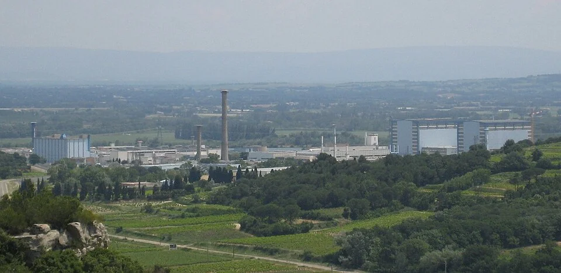
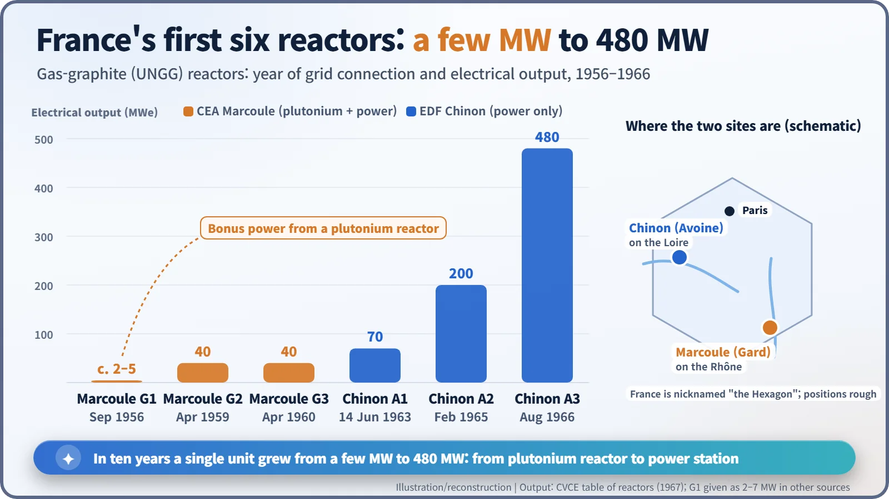
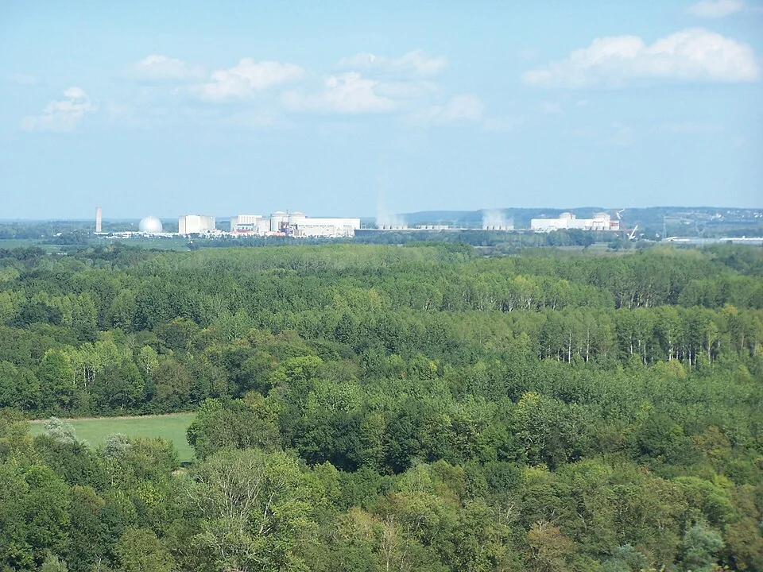
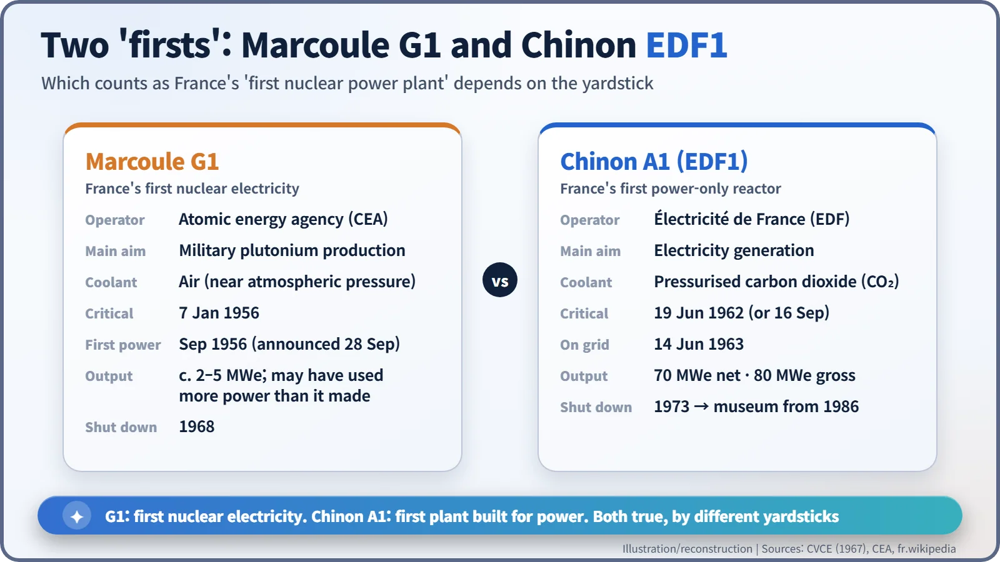

Nuclear History · 190
Between a Nobel Prize and the Price of a Kilowatt-Hour — Marcoule G1, Chinon EDF1 and France's First Nuclear Electricity
A plutonium reactor that made a few megawatts on the side, a 55-metre steel ball on the Loire, and two different answers to the question of which came first.
France's first nuclear electricity came in September 1956 from Marcoule G1, an air-cooled graphite reactor built to make plutonium, which produced only a few megawatts of power on the side. The first French reactor built purely for electricity, EDF's Chinon A1 (EDF1), inside a 55-metre steel ball on the Loire, was connected to the grid on 14 June 1963 with a net output of 70 MW.
A Nobel Prize or a kilowatt-hour?
"The CEA was aiming for the Nobel Prize; EDF was aiming for the price of the kilowatt-hour." That line is attributed to Roger Gaspard, director general of Électricité de France (EDF), the state power utility. It is quoted in French histories ("Le CEA visait le prix Nobel, EDF le prix du kilowattheure"; English translation ours), though we could not trace when or where he first said it. [3]
Either way, it neatly captures two institutions looking at the same reactors with different eyes: the scientists of the atomic energy agency, the Commissariat à l'énergie atomique (CEA), and the engineers who had to sell electricity. France's first nuclear power was born where those two views overlapped, at Marcoule on the Rhône in the south and at Chinon on the Loire in the west.
A plutonium reactor with electricity on the side
In the early 1950s France had exactly one reactor: ZOE, a near-zero-power research pile in a fort outside Paris. The next step was industry. A first five-year plan for atomic energy (1952–1957), championed by the politician Félix Gaillard, provided the money, and the CEA's administrator-general Pierre Guillaumat (1909–2002) chose Marcoule, in the Gard département of southern France, as the site. The purpose was plain: to produce plutonium. The scientific chief was High Commissioner Francis Perrin (1901–1992). [2] [3]
Work began in 1955, and on 7 January 1956 the first reactor, G1, went critical, meaning that nuclear fission had become self-sustaining, each split atom releasing neutrons that split the next. G1 burned unenriched natural uranium metal, used graphite to slow the neutrons down and was cooled by air blown through it at close to atmospheric pressure. Inside the core, uranium-238 absorbed neutrons and turned into plutonium. But the hot air coming out of the reactor carried heat that seemed a shame to waste. Why not use it to spin a turbine? [1]

September 1956: France's first nuclear electricity
On 28 September 1956 the CEA and EDF issued a joint announcement: G1's power had been raised enough to drive an EDF generator. It was the first nuclear electricity produced in continental Western Europe, arriving at almost the same moment as Britain's Calder Hall, which was formally opened that October. [3]
The numbers, though, were modest. Sources give G1's electrical output variously as 2, 3 or 5 megawatts (some even 7), so "roughly 2 to 5 MW" is the honest range. The giant fans pushing air through the core consumed electricity too, and one French account says the reactor would use more electricity than it produced. Think of it as warming a kettle with the heat left in the oven after the bread is baked. Still, the point was proved: heat from a reactor could be turned into electricity. [1] [3]
G2 and G3, which went critical in 1958 and 1959, went further. They carried heat away with pressurised carbon dioxide instead of air and used concrete pressure vessels. At about 40 MW each, they produced roughly ten times as much electricity as G1. Plutonium was still the main product, but the "by-product" power was now worth having.

EDF's first real power station: the ball at Chinon
Now it was EDF's turn, with a reactor built for electricity alone. In February 1957 construction began at Avoine, near Chinon on the banks of the Loire, on Chinon A1, known within EDF as EDF1.
It looked like nothing else. The reactor was enclosed in a metal sphere 55 metres across, and locals simply called it la boule, "the ball": a giant silver golf ball dropped into the fields of the Loire valley. [5]
Sources disagree on when it went critical: 19 June 1962 in a 1967 European table of reactors, 16 September 1962 in other accounts. The grid connection is not in doubt. On 14 June 1963 Chinon A1 sent power into the grid, with a net output of 70 MW (80 MW gross). It entered commercial service on 1 February 1964. [1] [5]

So which one came first?
Was France's first nuclear power plant Marcoule G1 or Chinon A1? It depends on the yardstick:
- The first reactor to make electricity from nuclear heat was Marcoule G1, in September 1956.
- The first plant built purely to generate electricity and feed it steadily into the grid was Chinon A1, in June 1963. Some French sources indeed describe A1 as the first reactor in France "to be put into service and connected to the electricity grid". [4]

Together the two reactors reveal something else. From the start, French nuclear power carried two goals on one technology: military plutonium and energy independence. Because the reactors burned natural uranium, France did not need to rely on enriched uranium from the United States. The line became known by its French initials, UNGG, for natural uranium, graphite and gas. [2] [6]
The ball stopped, but the road went on
Chinon A2 (connected to the grid in 1965) and A3 (1966) followed, with A3 reaching 480 MW gross. Reactors of the same family went up at Saint-Laurent-des-Eaux and Bugey. [6]
The end came abruptly. On 13 November 1969 (some sources date the official announcement to the 14th), President Georges Pompidou decided to abandon the gas-graphite line. Two reasons are usually cited: calculations that light-water reactors would generate power more cheaply, and the failure to sell the French design abroad. Marcoule G1 had already shut down in 1968; Chinon A1 followed in April 1973. [4]
The ball still stands beside the Loire. Partly dismantled, it has been presented since 1986 as a museum, the Musée de l'Atome. Somewhere between a Nobel Prize and the price of a kilowatt-hour, the first chapter of France's nuclear story sits inside it. [5]